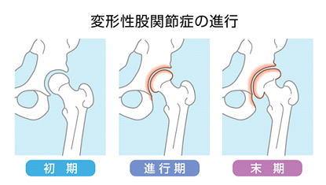

変形性股関節症
変形性股関節症とは
変形性股関節症とは、足の付け根にある股関節の軟骨がすり減り、痛みや動きの悪さを引き起こす疾患です。
関節の表面にある軟骨は衝撃を吸収するクッションであり、なめらかに関節を動かす役割を担っています。
軟骨が減ると炎症が起きて痛みや動きの制限の原因となり、進行すると骨の変形が起こります。

症状
立ち上がる時や歩き始め、階段の上り下りの時に足のつけ根に痛みを感じる
あぐら、正座、しゃがみ込みが困難になる
寝ているときの痛み（夜間痛）
原因
国内では変形性股関節症の8割以上が、股関節の受け皿側の発育が不十分である「発育性股関節形成不全」（以前は「先天性股関節脱臼」と呼ばれていました）が原因です。
若い年齢で症状を自覚することは少なく、発症年齢は平均40～50歳となっています。
海外では受け皿の大きさが十分であるにも関わらず発生する変形性股関節症（一次性股関節症）の割合が多いのですが、その場合は重量物作業や長時間の立ち仕事などの職業がリスクになります。
国内でも高齢の方が一次性股関節症を発症するケースが増加しています。
診断
変形性股関節症の診断で基本となるのはレントゲン検査です。
骨のすき間を見ることで、軟骨の状態を調べるとともに、骨の状態や変形をみて進行度を判定します。
CTやMRIは股関節の詳細を把握するのに有効で、超音波検査（エコー）は診断の補助に有用です。
治療
変形性股関節症の治療では、運動療法を中心としたリハビリテーションを実施します。
ゆっくり体を動かす有酸素運動や水中運動が推奨されており、足を広げる筋肉や膝を伸ばす筋肉を鍛えることが有効です。
痛みが強い時に無理をすると悪化する原因となるため、理学療法士など専門家の指導を受けることをおすすめします。
変形が進行し、症状が強い場合には、人工関節などの外科的手術が検討されます。
参考文献
変形性股関節症診療ガイドライン2016
日本整形外科学会ホームページ「変形性股関節症」